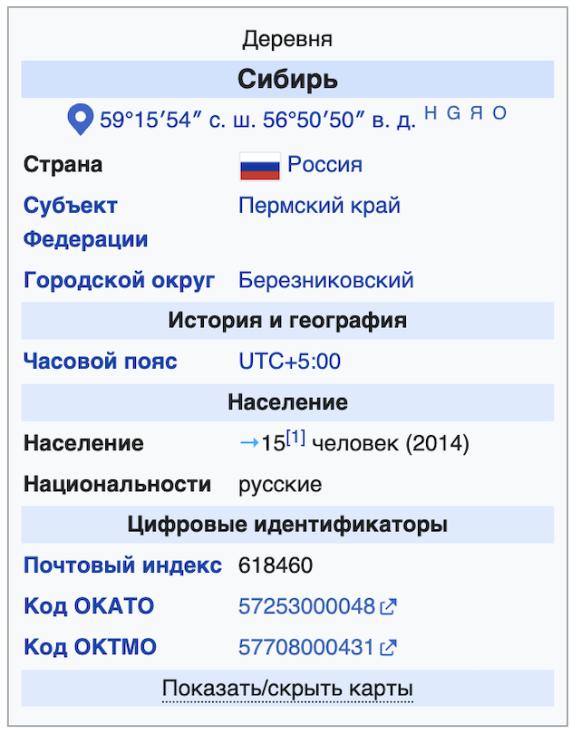

Сибирь (Пермский край)
Материал из Википедии — свободной энциклопедии
У этого термина существуют и другие значения, см.
Сибирь (значения).

Сиби́рь — деревня в
Пермском крае России. Входит в
Березниковский городской округ в рамках организации местного самоуправления и в
Усольский район в рамках
административно-территориального устройства края.
География
Деревня расположена примерно в 12 километрах по прямой на юго-юго-восток от южной оконечности города Березники.
Климат
Климат умеренно континентальный с суровой продолжительной зимой и тёплым коротким летом. Самый холодный месяц —
январь со среднемесячной температурой (−15,7 °C), самый тёплый — июль со среднемесячной температурой (+17,4 °C).
продолжительность безморозного периода в среднем составляет 114 дней. Общее число дней с положительной температурой
190. Последний весенний заморозок в среднем наблюдается в конце мая, а первый осенний — в конце второй декады
сентября. Среднегодовая температура воздуха −2,2 °C
[2].
История
С 2004 до 2018 года деревня входила в
Романовское сельское поселение
Усольского муниципального района
[3], с 2018 года включается в Романовский территориальный отдел
Березниковского городского округа
[4].
Население
|
Численность населения
|
| 2010 [5] |
2013 [1] |
2014 [1] |
| 29 |
↘15 |
→15 |
Постоянное население деревни было 29 человек (русские 97 %) в 2002 году[6], 29 человек в
2010[7].
Примечания
- Численность постоянного населения Романовского сельского поселения на 1 января 2014 года. Дата обращения: 16 марта 2015. Архивировано 21 февраля 2015 года.
- Генеральный план и правила землепользования и застройки Романовского сельского поселения Усольского муниципального района Пермского края Генеральный план. Материалы по
обоснованию // Федеральная государственная информационная система территориального планирования. — 2010.
- Закон Пермского края от 21.06.2018 № 252-ПК «О преобразовании поселений, входящих в состав Усольского муниципального района, путем объединения с муниципальным образованием
„Город Березники“». Дата обращения: 23 мая 2020. Архивировано 7 июня 2020 года.
- Территориальные отделы. Дата обращения: 10 марта 2023. Архивировано 9 марта 2023 года.т
- ВПН-2010. Численность и размещение населения Пермского края. Дата обращения: 10 сентября 2014. Архивировано 3 января 2014 года.
- Коряков Ю. Б. База данных "Этно-языковой состав населённых пунктов России". Дата обращения: 21 мая 2020. Архивировано 13 июля 2014 года.
- Численность населения городских округов, муниципальных районов, городских и сельских поселений, городских населённых пунктов, сельских населённых пунктов Пермского края по итогам
Всероссийской переписи 2010 года // Пермьстат. — 2012. Архивировано 26 июня 2020 года.т